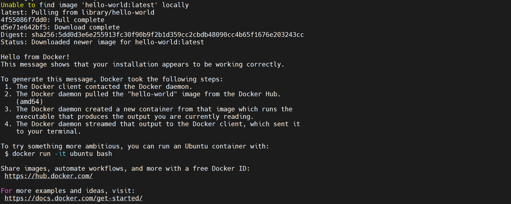
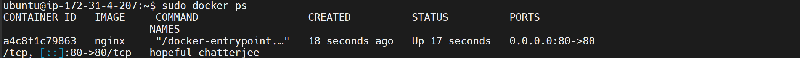
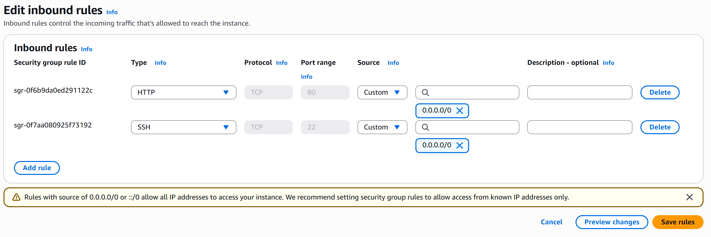
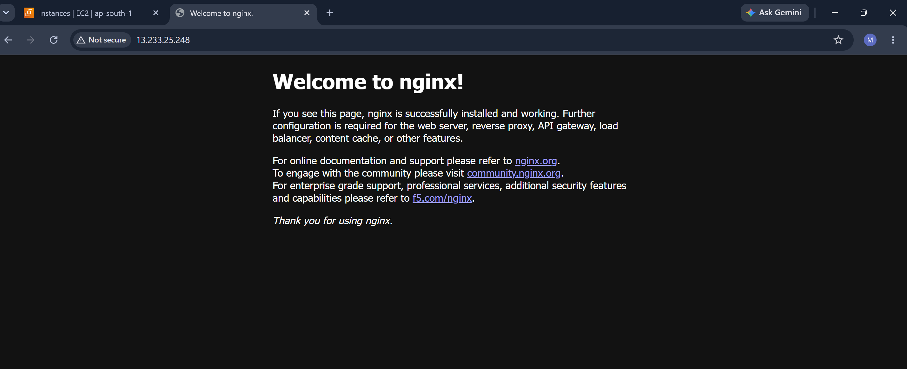

Deploy an Nginx web server using Docker on an AWS EC2 instance.
AWS EC2, Ubuntu, Docker and Nginx
docker --version
sudo apt update
sudo apt install docker.io -y
sudo systemctl start docker
sudo docker run hello-world
sudo docker run -d -p 80:80 nginx
sudo docker ps
Docker container running successfully
Port mapping: 0.0.0.0:80 -> 80/tcp
Nginx Welcome Page displayed successfully.
Nginx was successfully deployed inside a Docker container on AWS EC2 and accessed through the public IP address.
Some screenshots from the task execution are shown below.



